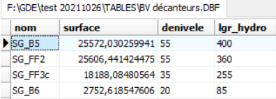
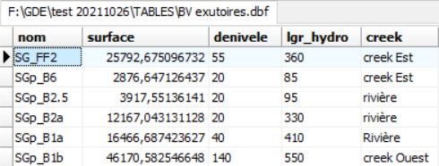
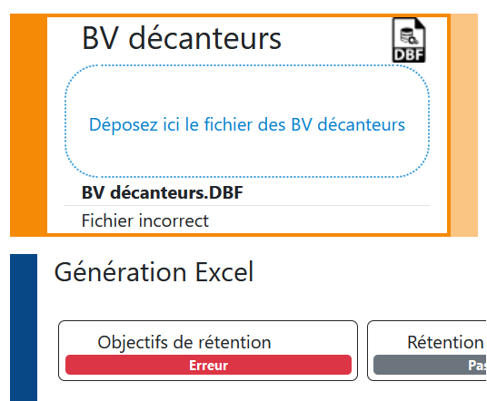
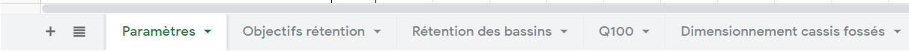

Aide
Aide
© 2021 - Kenskoaz - kenskoaz@gmail.com
Aide
L'application permet de générer des tableaux de dimensionnement d'ouvrage de gestion des eaux.
En entrée, il faut fournir des fichiers BDF décrivant les bassins versants des décanteurs, les décanteurs et les
bassins versants des exutoires.
En sortie, l'application génère un fichier Excel.
| Fichier DBF | Exemple |
|---|---|
| Bassins versants décanteurs |  |
| Décanteurs |
Seules les lignes dont le type est 'FF' ou 'DECANTEUR' sont traitées. |
| Bassins versants exutoires |
Définir le creek permet de regrouper les bassins dans les tableaux de dimensionnement.  |
Si l'import s'est bien déroulé, vous aurez le visuel suivant :

Si le fichier n'a pas pu être traité, vous aurez le visuel suivant :
Dans ce cas, il vous faudra vérifier le format du fichier en entrée, les noms des colonnes, les valeurs, ...
A tout moment, vous pouvez réinitialiser l'application pour repartir à zéro.

Le fichier contient 5 onglets. 
L'onglet 'Paramètres' permet de personnaliser certaines valeurs, prises en compte immédiatement dans les formules (ex : coefficient de Montana, vitesse d'écoulement, ...).
L'onglet 'Objectifs rétention' donne les volumes de rétention 2H/2ANS pour chaque bassin versant grâce aux données du premier fichier DBF.
L'onglet 'Rétention des bassins' calcule les capacités de rétention de tous les bassins d'un bassin versant grâce aux données du 2ème fichier et permet ainsi de comparer avec l'objectif de rétention calculée dans le premier onglet.
L'onglet 'Q100' calcule le débit centennal et permet le dimensionnement des sections des déversoirs grâce aux données du 3ème fichier.
L'onglet 'Dimensionnement cassis fossés' permet le dimensionnement des sections des fossés et cassis grâce aux données du 3ème fichier.
| Pente % | ( Dénivelé du bassin versant (m) / Longueur hydraulique du bassin versant (m) ) * 100 |
| Volume d'eau à retenir dans le décanteur (m3) | ( Quantité max de précipitations / 1000 ) * (Superficie du BV * 1000 ) * Coefficient de ruissellement |
| Capacité de rétention (m3) | Surface au sol * ( Profondeur - Profondeur de déversoir + Hauteur de digue ) |
| % de l'objectif - 2H/2ANS | Capacité cumulée des bassins * 100 / Objectif de capacité de rétention du BV |
| Pente BV % | ( Dénivelé / Longueur hydraulique ) * 100 |
| Vitesse d'écoulement | si 'Pente BV'
< 5 alors vitesse=1 si 5 <= 'Pente BV' < 15 alors vitesse=2 si 'Pente BV' >= 15 alors vitesse = 4 |
| Calcul du temps de concentration | ( Longueur hydraulique / Vitesse d'écoulement ) / 60 |
| Temps de concentration retenu | si 'Calcul du temps de concentration' > 'Paramètre [Temps de concentration minimal retenu]' => 'Calcul du temps de concentration' sinon => 'Paramètre [Temps de concentration minimal retenu]' |
| Calcul de l'intensité de l'averse | Coefficient de Montana A * ( Temps de concentration retenu ^ - Coefficient de Montana B ) |
| Calcul du débit par la méthode rationelle | ( Coefficient de ruissellement * Calcul de l'intensité de l'averse * Superficie BV * 0.01 ) / 3.6 |
| Largeur de l'évacuateur | Calcul du débit par la méthode rationnelle / ( Constante rhéolgique * ( 2 * Gravité ) ^ 0.5 * Hauteur de lame d'eau ^ 1.5 ) |
| Hauteur de l'évacuateur | Hauteur de lame d'eau + Revanche |
| Largeur de la zone de passage d'eau | Largeur de l'évacuateur arrondie au 0.5 supérieur |
| Hauteur de la zone de passage d'eau | Hauteur de la charge sur le seuil |
| Valeur du 1er membre | ( Calcul du débit par la méthode rationnelle / Coef de Strickler * ( Pente fossé-cassis ^ 0.5 ) ) ^ 1.5 |
| Valeur du 2ème membre | ( Hauteur de lame d'eau * Largeur du fossé-cassis ) ^ 1.5 / ( 2 * Hauteur de lame d'eau + Largeur du
fossé-cassis ) |
| Vitesse max dans fossé-cassis | Coef de Strickler * ( ( Hauteur de lame d'eau * Largeur du fossé-cassis ) / ( 2 * Hauteur de lame d'eau +
Largeur du fossé-cassis ) ) ^ 2/3 * Pente du fossé-cassis ^ 0.5 |